Optical Illusions
人眼具备根据主体周围环境调节适应的能力，比如在白炽灯、正午阳光下看到的同一个物体，会呈现出不同颜色，因此对于人眼来说颜色是相对的。由于人眼的自我调节能力，在一些特定场景下会给人视觉上的幻觉，以下是几个典型的例子。
Example 1
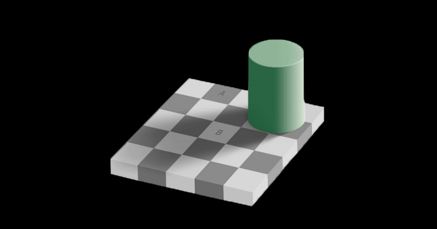
图中的 A、B 两个方块中的颜色看起来一深一浅，但实际上却是同一种颜色。利用 Photoshop (Ps) 的 brush tool，取 A 色块的颜色，从 A 刷到 B，就能得到下图：
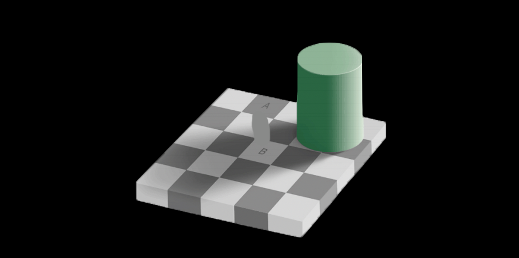
Example 2
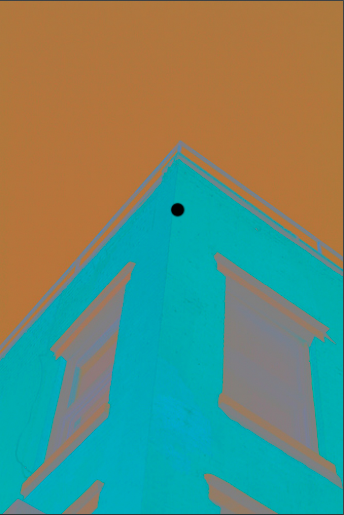
先凝神盯着图中的黑点 30 秒左右，忽然换成下图 (用 PPT 切换页面效果更佳)：
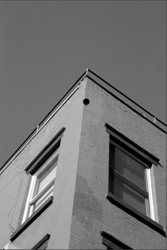
会发现切换后很短的一瞬间，能看到这栋建筑正常的颜色，但马上就会发现实际上是一张黑白照片。图一是建筑正常颜色的补色，个人认为有点类似 Le Chatelier's principle (勒沙特列原理)。
Example 3
凝神盯着下图中的黑十字看，会发现粉点逐渐消失，最终只剩下黑十字。
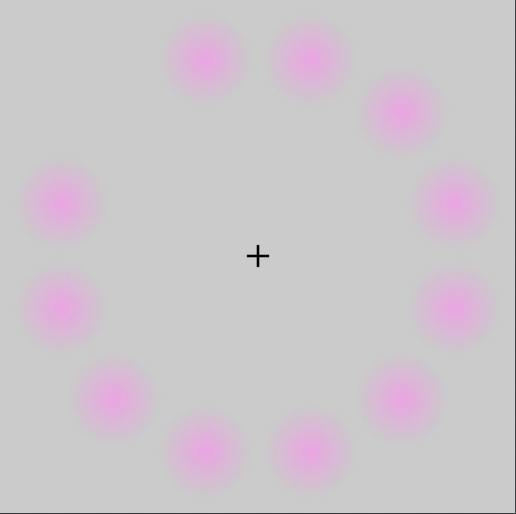
💡 有意思的是，世上甚至存在一个年度幻觉 (视觉上的幻觉是其中之一) 比赛 —「Best Illusion of The Year Contest」
Color Space
ℹ️ 下文中，profile、color space 和 gamut 等价
尽管人眼对于颜色的感受不是绝对的，但计算机喜欢绝对。因此我们需要一个精确的、固定的、可衡量的、可以作为参照的可见光色域 (gamut)，或色彩空间。
1931 年，International Commission on Illumination (CIE) 基于人类视觉感知模式，利用一批受试者数据，构建了下面这个「CIE 1931」色彩空间，它包含了一般人眼能感知到的所有可见光 (一些特殊人群可能有更强的色彩感知能力)：
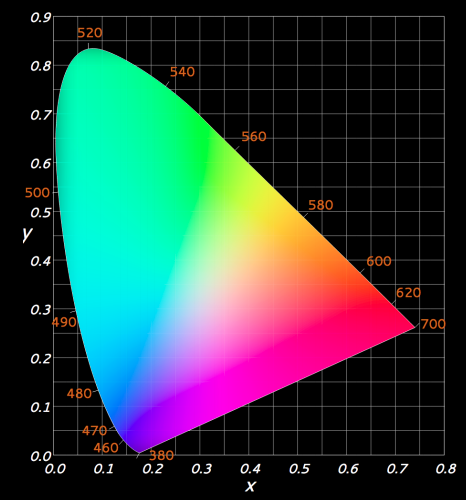
其中 x 轴可以看作是非线性的 RGB 组合，而 y 轴指代的是亮度 (luminance)。可以看出它是一个 convex 空间，即空间中中任意两点连线的中点仍然位于空间中。而上面这个色域的另一个特点是：图中任意两点所指颜色混合后正好得到其连线中点上的颜色。
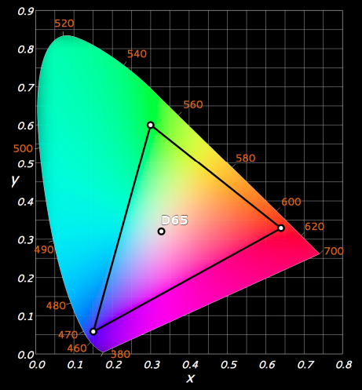
上图是我们常见的「sRGB」色彩空间，它是「CIE 1931」中的一个子集，是由惠普 (HP) 和微软在 1996 年共建的色彩空间，广泛地被应用于它们生产的显示器、打印机中，以及现在的网页中。上图中的 D65 正是「sRGB」中的绝对白色。
在 Adobe 系列产品中常常用到的一个色彩空间是「Adobe RGB」，如下图所示：
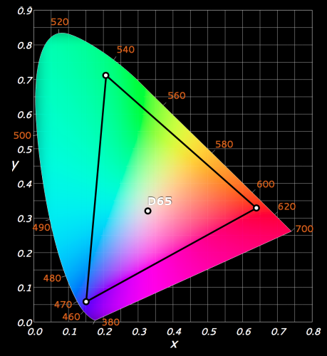
与「sRGB」相比，「Adobe RGB」主要是在绿色的丰富度上有明显的提升。对于同一组 RGB 取值，在不同色彩空间中对应的实际颜色不一样。
Color Management
在摄影师、剪辑师的日常工作中，需要在工作流中使用多个设备，一个简单的工作流如下图所示：
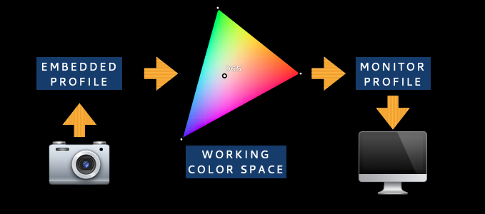
照相机、摄像机中一般内嵌地支持多种色彩空间，也称为 embedded profile
从拍摄设备中将影像导入计算机并在后期软件中打开，embedded profile 被转换成 working color space
我们在显示器上看到的影像使用的是显示器内置的 profile，即 monitor profile
后期完成后的影像被观众在不同的设备中打开，使用的是各自设备的 color space
在必要的时候，比如显示器不直接支持 woking color space，就需要做色彩空间的变换，常见的两种变换方式如下图所示：
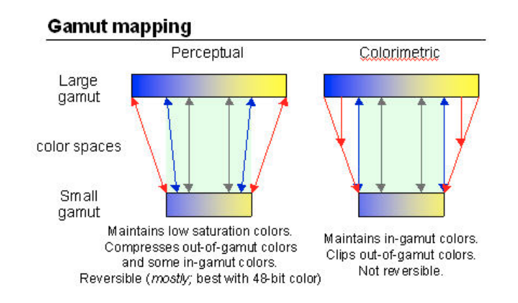
在调试显示器时，可以借助一些 checkerboard，如：
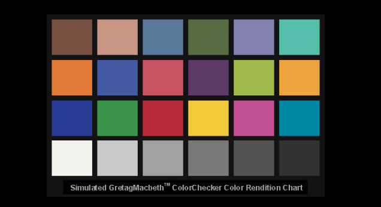
Gamma
由于人眼对亮度的感受是非线性的，如 20% 的光就可以让人眼感受到 50% 的亮度 (中间灰)。换句话说，人眼在偏暗的区域具备更强的分辨能力。如果将捕获到的光线性地转化成 [0, 255] 上对应的取值，我们就会花费大量的信息保存人眼无法区分的色彩，因此常用的一种编码方式就是 Gamma 转换：
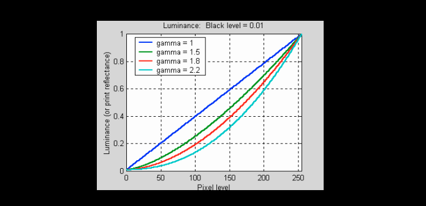
如图所示，当 gamma = 2.2 时，我们大约使用 [0, 255] 中的前 180 个取值编码前 50% 的亮度，根据人眼的感受特点作出相应的调整，使得计算机能够像人眼一样记录信息。常见显示器使用的 gamma 值就是 2.2。图中的 gamma curve 也是一种 tone curve。
Color Temperature
色温是光线中包含颜色成分的计量单位。理论上的绝对黑体在受热后会逐渐由黑变红，转黄，发白，最终出现蓝光。黑体在不同温度下发出的光所含的光谱成分，就称为该温度下的色温。
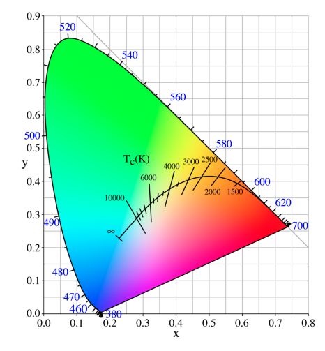
通常清晨和傍晚的自然光色温较低，比较柔和；而正午的自然光色温较高，比较刺眼。由于同一个物体在不同的光照条件下拍出的颜色不同，以白色物体为参照，通过调节色温校准白色就是所谓白平衡 (white balance) 调节。
RAW vs. JPEG
根据上述的概念，我们回顾一下 raw 与 jpeg 格式图片所存储信息的区别：
| RAW | JPEG | |
|---|---|---|
| Bit depth | 10-, 12-, 14-bit | 8-bit |
| Tone curve | Not applied | Applied |
| White balance | Not set | Set |
| Compression | Loseless | Lossy |
| Portability | Non-standard | Standard |
| Post-processing | Required | Optional |
Artifacts
由于硬件设备自身的不完美，可能导致成像过程中出现光学像差 (optical aberrations)，本节将简单介绍一些常见的像差现象。
Spherical Aberration
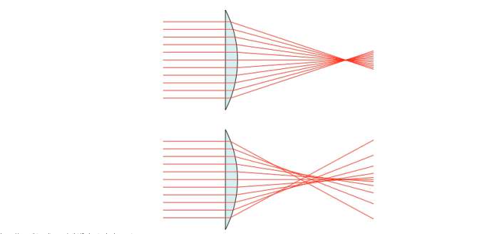
在球面镜片四周会出现折射不精确的问题，使得光线聚焦点不一致，最终导致画面四周出现模糊的现象：
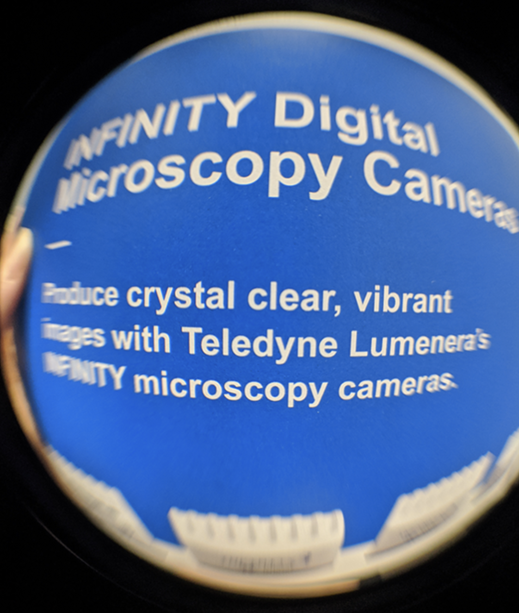
Coma
当光线从侧面进入镜头时，会出现类似的多聚焦点现象：
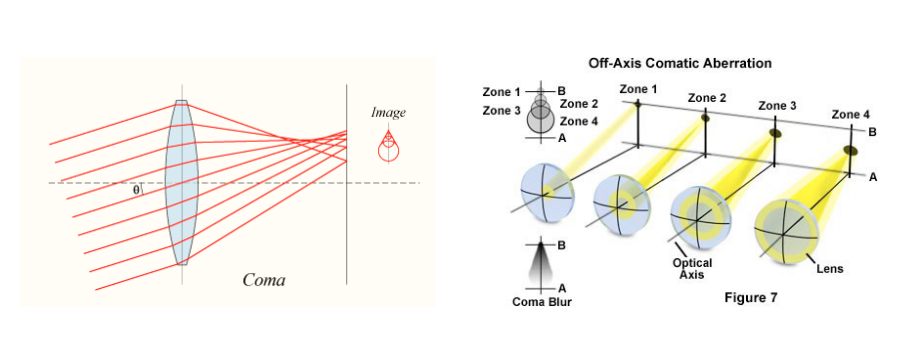
表现在照片上，就是画面四周的点光源呈现彗星 (coma) 状：
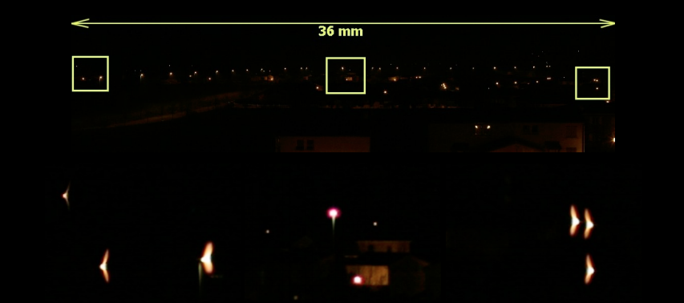
Astigmatism
当镜片在一个方向上的曲率与另一个方向上的曲率不同时，就可能出现散光现象：
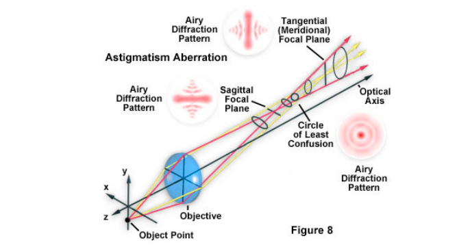
这与人眼出现散光现象的原因类似。存在散光的物体成像例子如下：
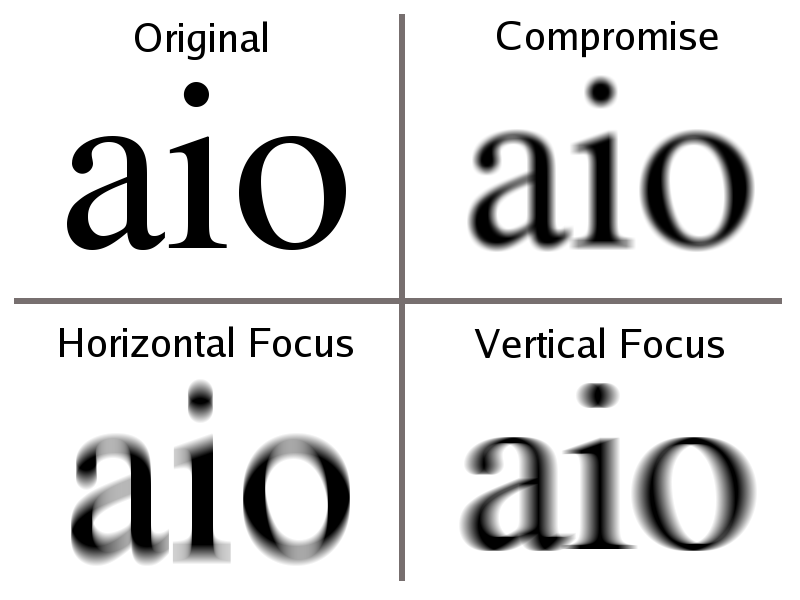
Vignette
暗角常常在使用广角镜头拍摄照片时出现，且光圈越大，现象约明显。
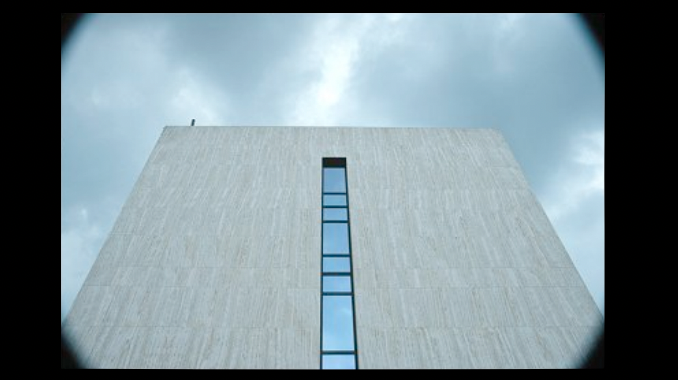
原因看下面这张图：
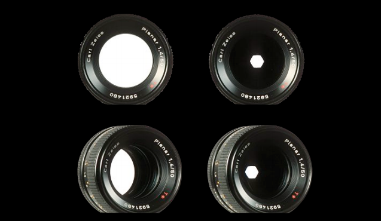
从角落进入镜头的光自然而然地比中间进入的少，因此容易出现暗角。如果你仔细看 bokeh 在照片四周的成像形状，可以看到类似的现象：
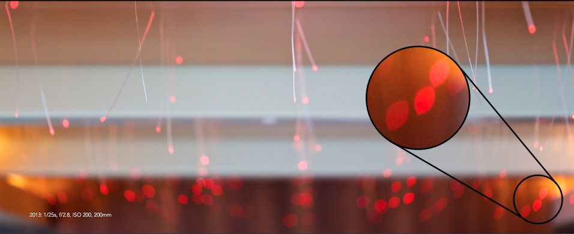
上面提到暗角实际上是光学暗角 (optical vignetting)。还有一种自然暗角 (natural vignetting)，是由于光线强度随着光线进入镜头的夹角增大而减弱导致：
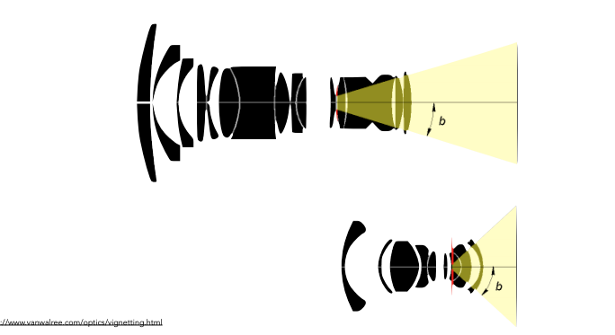
Distortions
画面畸形存在如下两种情况：
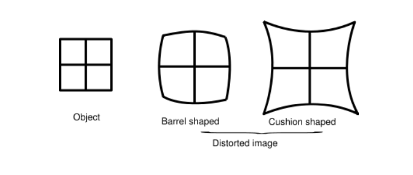
当镜片区域的放大率随着其与中轴的距离增加而减少时，会出现 barrel-shaped 畸形；当放大率随着其与中轴的距离增大而增大时，会出现 cushion-shaped 畸形。
真实的照片举例如下：
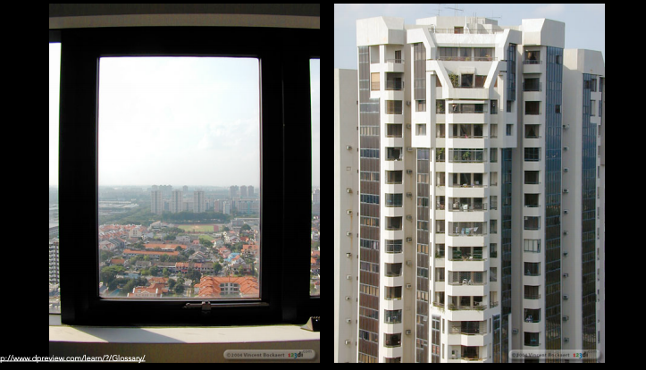
Refraction
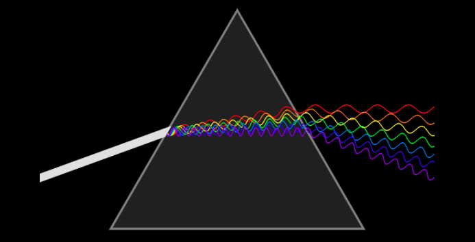
不同波长的光在镜片中的折射率不同，可能导致不同颜色的光的焦点不同，如下图所示：
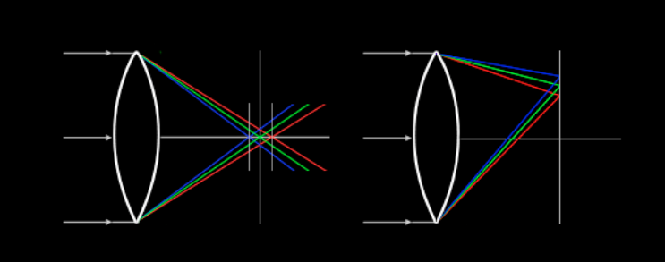
体现在照片中就是一些模糊和色边现象：
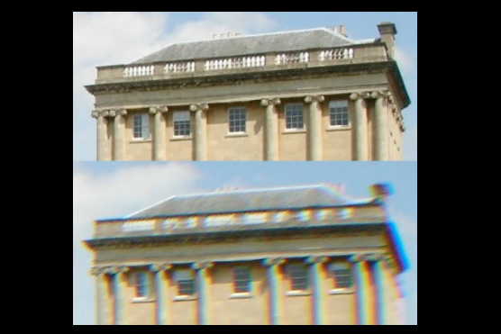
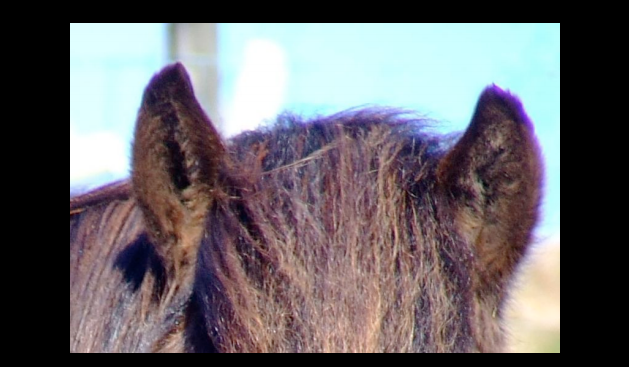
近年来的相机和镜头在这方面已经有很大的改善。
Diffraction
由于光的波动性，光在经过很小的孔后会出现衍射现象：
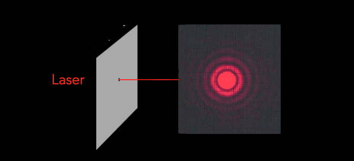
因此，但我们将光圈大小调节得过小时，就会使得画面变模糊：
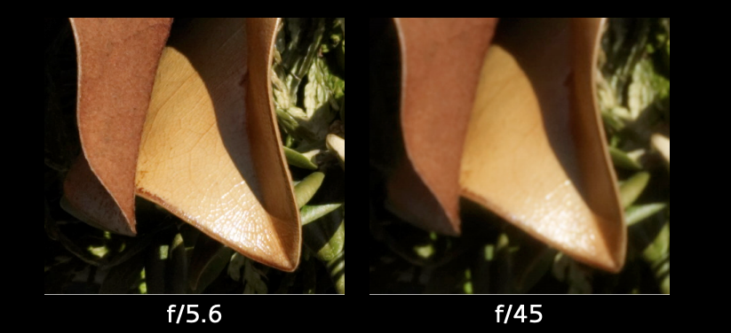
Aliasing
因为每张图片实际上是由很小的方块构成，因此在边缘就可能会出现不平整的情况。常见的做法就是所谓的 anti-aliasing，在边缘增加过度色块，如下图所示：
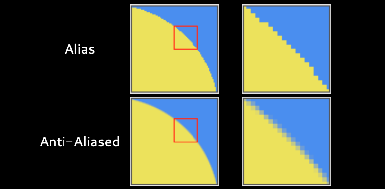
MOIRÉ
如果画面中的纹路非常细密，就可能出现摩尔纹现象：
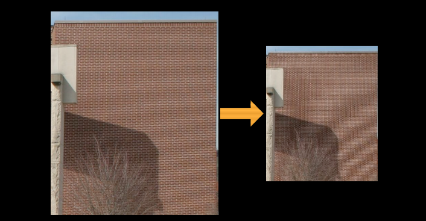
甚至类似迷宫的花纹：
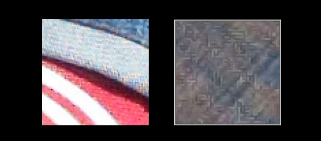
Sharppening Halos
锐化的原理就是找到色差较大的边缘，放大边缘两边的对比度。如果过度使用这样的处理，就可能出现锐化光环：
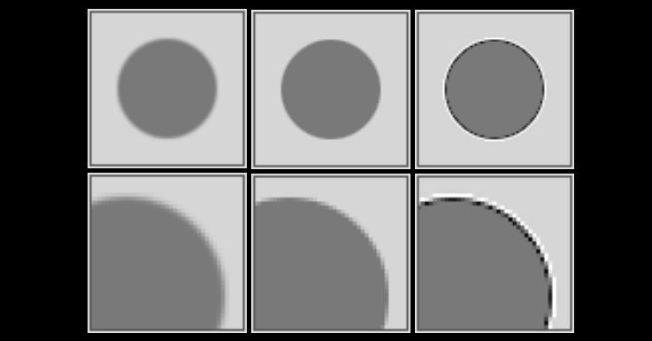
参考
- Color management: Implementation part 1
- Color management: Implementation part 2
- Wikipedia: Gamma correction, Color temperature, Astigmatism, vignette, distortion (optics), Moire pattern
- 百度百科：色温
- Minimizing spherical aberration: make the right lens choice for your imaging system
- Astigmatism: Symptoms & causes
- Lens vignetting in photography: correcting and maintaining the image's balance